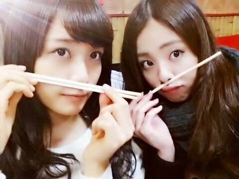
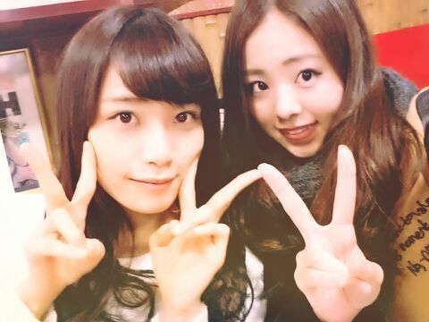

ほほお〜〜い .♪ こんばんワン
今日は 名古屋で握手会 ! !
まいまいとペアやった
まいまい と ろってぃ−

お箸 で おひげさん〜 全然 ひげっぽくないわっ*´ω`*
前日の夜に 名古屋のおいち− 料理食べてきたのっ.♪
まいまいと 隣でねっ
一緒においちいもん、いいっぱい食べた.

ぴぃ〜〜す //
今日は、Rotty夢☆さん・まいみんさん・乃木坂famさん
本間にありがと〜う )))
ほんっっまに めっちゃめっちゃ
楽しかったの〜 (*/ω＼*)
Rotty夢☆さんは相変わらず元気元気で
嬉しかったよ〜
まいみんさんが『Rotty夢☆は1番団結力があると言うか温かいよね*^^*』って言ってくれたよ〜
嬉しいね〜
まいみんさんも 温かい人ばかりで
本当嬉しかったぁ〜(*^.^*)
まいみんさんもまいまいに似て優しいから
ちょっかいかけたり いらんことしちゃっても
何時も笑顔で返してくれた(´；ω；｀)笑
ありがとう あはっ.♪
なんだか、Rotty夢☆ と まいみん 意気投合してたと言うか 相性よくない？？ って
まいまいと 終わってから話してたんだよ〜(*^.^*)
まいまいも本間 ありがとう .♪
また まいまいとペアの握手会したい〜
なんかねぇ〜 何人かのメンバーで
自分か男だったとしてがちで乃木メンの中で
彼女にするなら誰がいいのかな？って話をした時に
ろってぃ−とまいまい ってなった！って話を
聞いたことがあるの.♪
...ってゆーねー、
嬉しゅうなあ〜っとね、急に思い出しただけです( 〃▽〃)
あは
握手会 、皆さん来てくださって
本当にありがとうございました！
また全国握手会も 個別握手会にも来てくださいねω
待てるタイプなんで 待ってますよ？あはっ
Rotty.
あっ、 そーだ *^^*
あっ そーだ. ちょっと前ね〜
メンバーと 温泉に入ったんだぁ〜
それが ほんっとに気持ちよくって最高だったの〃ω〃
まひろ,さゆりん,さゆにゃん,かずみ,七瀬,生駒,ゆったん,みさ,あみ,ちはる,川後,若月,,,, 多っ 笑
2,3人で入るお風呂に ぎゅうぎゅうで6人で入ったり、
めっちゃ浅い足首までしか浸からんお風呂に
どーにか浸かろうと思って寝転んで入ってみたり
皆でサウナ入って、水風呂つかって、またサウナ入ったり
きゃーきゃーしたりして めっちゃたのしかったぁ〜(*^.^*)
また 皆で温泉 入る〜(*´ω｀*)
ほんなら、ろってぃ−も もう寝るね〜
皆もいい夢見てね love おやすみね。
大好きよ〜のし.♪ Rotty